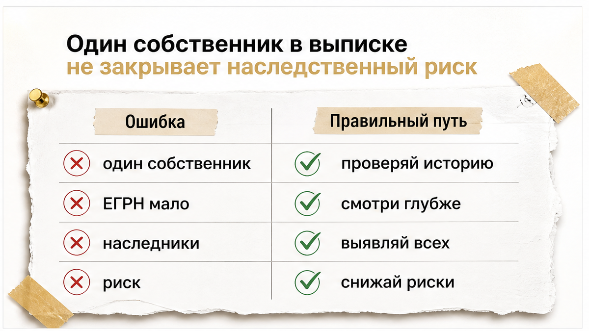
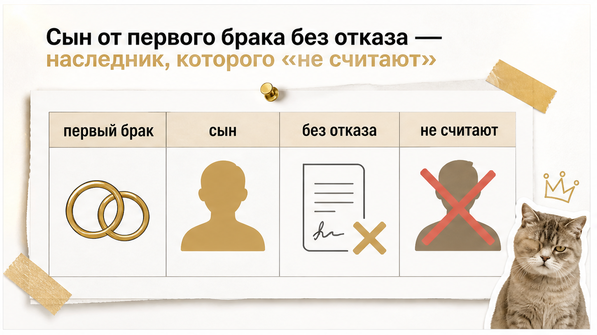
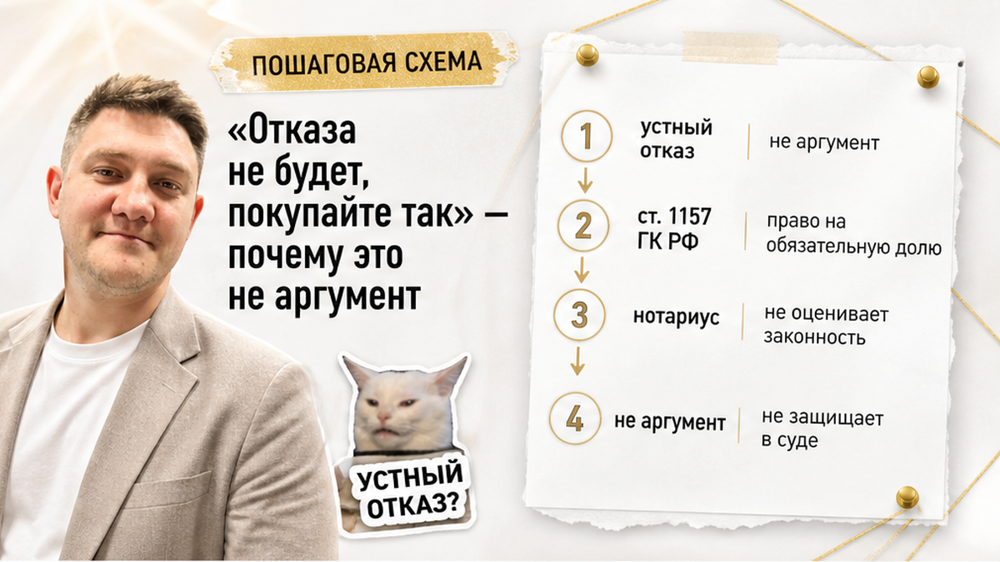
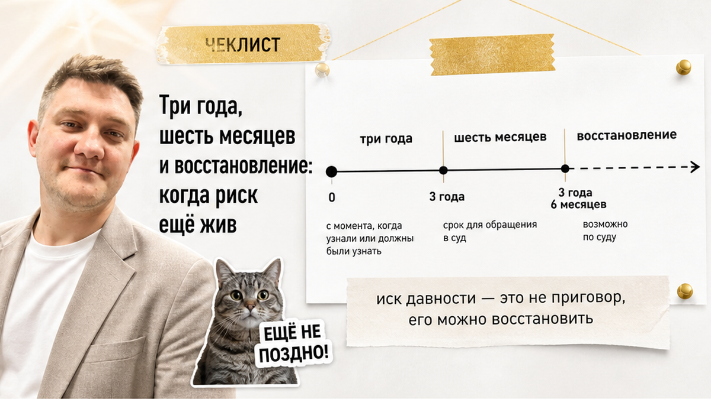
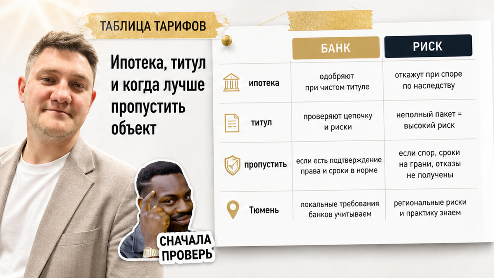

«В выписке один собственник — значит, чисто?»
Так думают многие перед авансом на вторичке в Тюмени.
Квартира выглядит спокойной: продавец уверенный, риелтор кивает, наследство «оформлено, всё в семье».
Спокойствие обманчиво.
Аванс уже лежит в сумке. После долгого поиска хочется закрыть вопрос.
А предавансовая проверка показывает другое.
С момента смерти отца прошло меньше трёх лет. У умершего есть сын от первого брака. Нотариального отказа от наследства нет. Документов нет. Где наследник — не знают.
Продавец говорит: «Отказа не будет, покупайте так».
С вами Святослав Шакин, риелтор в Тюмени. Веду сделку сам — от звонка до регистрации.
Покажу, почему такой сценарий опаснее красной строки в отчёте за 2 900 ₽ — и что запросить до аванса.
Быстрый инсайт.

Обычный человек смотрит на выписку ЕГРН и видит одну строку собственника.
Риэлтор спрашивает:
«А как право сюда пришло?»
При наследственной продаже важна не только «кто сейчас владелец», а цепочка: приватизация, смерть одного из собственников, принятие наследства оставшимися.
Типичная ошибка покупателя вторички в Тюмени: смотреть только на текущего собственника в выписке и считать, что «цепочка чистая».
В свежем практическом кейсе: квартира была приватизирована на маму, папу и ребёнка. После смерти отца его доля перешла по наследству. В ЕГРН на момент сделки — один собственник.
Казалось бы, доля умершего уже перераспределена. Остался один владелец в реестре.
Но предавансовый отчёт (~2 900 ₽) подсветил красные риски по документам-основаниям и истории владения. С даты смерти наследодателя не прошло трёх лет.
Покупатель после долгого поиска склонен закрыть глаза на «мелочи в отчёте».
Но «мелочь» здесь — не учтённый наследник. Не опечатка в кадастровом номере.
Клиент в том кейсе не внёс аванс и отказался от объекта на этапе предавансовой проверки.
Вердикт: одна строка в ЕГРН — не досье.
«Ну отчёт же за три тысячи — что он может знать?»
Больше, чем кажется.
Предавансовая проверка по кадастровому номеру собирает историю переходов права, основания владения и список документов, которые стоит запросить у продавца до аванса.
В кейсе с наследством меньше трёх лет отчёт не «пугает ради пугалки». Он фиксирует окно, когда юридическая возможность восстановить права у «забытого» наследника ещё жива.
Типичный рабочий сценарий при красных флагах: один звонок продавцу или риелтору с чеклистом из отчёта.
Не десять встреч. Один звонок с конкретным списком: свидетельство, отказы, реестр, справки о браках.
Если в ответ слышите «документов не будет» или «покупайте так» — это не переговоры. Это сигнал пропустить объект.
Для самостоятельного покупателя в Тюмени доступны отдельные сервисы предавансовых отчётов. У моих клиентов проверка часто встроена в сопровождение сделки.
Смысл один: дешевле отчёт, чем один неправильный аванс в сделку с неучтённым наследником.
Проверка не обещает, что суда не будет. Она обещает, что вы вошли в аванс с открытыми глазами.

Обычный человек видит семью у двери квартиры.
Риэлтор спрашивает:
«А где наследник первой очереди?»
Наследники первой очереди по закону — супруг, дети и родители наследодателя.
Дети от первого брака остаются наследниками первой очереди, даже если не живут в квартире, не участвуют в продаже и «в семье их не считают».
Не приезжают на показы. Не подписывают договор. Не сидят за столом переговоров.
Это не значит, что их нет в очереди на наследство.
В кейсе недели: у умершего отца — сын от первого брака. Нотариального отказа от наследства нет. Документов нет. Местонахождение неизвестно.
Риелтор по сделке сначала не знал, был ли брак первым. После уточнения по чеклисту из отчёта всплыл наследник, о котором «забыли» в разговоре с покупателем.
«В семье его не считают» — не юридический аргумент. Закон считает.
Отдельный слой риска — обязательная доля (ст. 1149 ГК РФ). Несовершеннолетние дети, нетрудоспособные супруг, родители или иждивенцы наследуют долю даже при завещании в пользу другого лица. Такую сделку могут оспорить.
Уважительная причина не явиться к нотариусу не отменяет права.
Пример из того же сигнала: отец умер около двух лет назад, сын на СВО и физически не мог прийти к нотариусу. Юридическая возможность восстановить права при уважительных основаниях остаётся.
Покупателю это не семейная история. Это риск потери единоличной собственности или регресса к продавцу.

«Ну он же отказался — мы не общаемся».
Не работает.
Отказ от наследства возможен только в нотариальной форме (ст. 1157 ГК РФ). Отказ нельзя отозвать (п. 3 той же статьи). Устное «мне не надо», «мы не общаемся», «он отказался» — риск не снимает.
Новость той же недели (15.08.2026, news-kursk.ru): устный отказ наследника не имеет силы. Для снижения риска появления неучтённых наследников нужен нотариальный отказ. Ожидание трёх лет с даты смерти наследодателя снижает, но не обнуляет риск.
Фраза продавца «отказа не будет, покупайте так» — прямой красный флаг.
Она означает: покупатель берёт на себя наследственный риск без документов, которые могли бы его снять.
Оговорка в договоре купли-продажи о возмещении убытков продавцом не останавливает иск нового наследника, если он восстановит права — так описывают последствия для добросовестного покупателя юридические обзоры (в т.ч. Rambler, 2026).
Покупатель может быть добросовестным. Суд всё равно может признать сделку недействительной.
Что может сделать «забытый» наследник: восстановить срок принятия наследства в суде → оспорить продажу → покупатель теряет единоличную собственность или вступает в регресс к продавцу.
Для ряда наследственных споров срок иска о защите нарушенного права — один год с момента, когда наследник узнал о нарушении.
То есть риск может «догнать» и после регистрации — если наследник узнал о сделке позже и пошёл в суд.
Вердикт: не подписывайте аванс под фразой «покупайте так».

«Прошло полгода после наследства — можно не проверять?»
Нет.
В разговорах риелторов «три года» после смерти наследодателя — не магическое число из договора. Это ориентир по общему сроку исковой давности по требованиям, связанным с правом собственности — три года (ст. 196 ГК РФ).
Для покупателя наследственной квартиры адвокаты называют три года с даты смерти наследодателя моментом, когда риск «всплытия» нового наследника снижается, но не исчезает.
Отдельно — срок вступления в наследство: шесть месяцев с открытия наследства (ст. 1154 ГК РФ).
Пропуск этого срока не лишает права навсегда. Суд может восстановить срок при уважительных причинах, если иск подан в течение шести месяцев после отпадения причин (ст. 1155 п. 1 ГК РФ).
Внесудебный путь: опоздавший наследник может принять наследство при письменном согласии всех остальных наследников, уже принявших наследство (ст. 1155 п. 2 ГК РФ) — с пересмотром свидетельств у нотариуса.
Типичная ошибка покупателя: считать, что «прошло полгода после наследства — можно не проверять».
Окно восстановления шире полугода.
Пока не прошло три года и нет полного комплекта отказов всех потенциальных наследников первой очереди, «спокойствие по календарю» необоснованно.
Вердикт: календарь не заменяет досье.
Расскажу, что поднять до аванса — пока ещё можно отойти без потери денег.
До передачи аванса запросите и сверьте:
По каждому пункту — коротко, зачем он нужен.
Свидетельство и цепочка в ЕГРН показывают, откуда у текущего собственника право. Реестр ФНП — кто ещё мог претендовать и у какого нотариуса открыто дело. Отказы первой очереди закрывают «теневых» наследников, в том числе детей от прошлых браков. Справки о браках — чтобы не гадать, был ли брак первым. Завещание и обязательная доля — чтобы сделку не оспорили иждивенцы. Согласие опеки — если в цепочке несовершеннолетние.
Нотариальная сделка с участием нотариуса — не замена полной проверки наследственной цепочки. Нотариус не обязан закрыть для покупателя все риски «забытых» наследников, если документы не запрошены.
Если продавец или риелтор не даёт документы из списка — не переносите аванс «на потом».
«Пришлём после задатка» — тоже красный флаг. Документы, которые снимают наследственный риск, нужны до денег, а не после.
Отказ от объекта без потери денег лучше, чем аванс в сделку с неучтённым наследником.

Банки осторожны с наследственными объектами.
При незакрытых наследниках и «битой» цепочке документов возможен отказ в ипотеке — по аналогии с кейсами, когда в истории объекта не закрыты права умерших супругов или со собственников.
«А банк же одобрит — они же проверяют».
Не всегда.
Титульное страхование — опция, если риск нельзя снять документами. Но страховая может отказать при явных красных флагах в наследственной истории.
Ипотека и титул не снимают наследственный риск сами по себе. Они лишь добавляют ещё одного контролёра — который тоже может сказать «нет».
Практический вердикт для покупателя вторички в Тюмени:
Если с момента смерти наследодателя прошло меньше трёх лет, нет нотариальных отказов всех наследников первой очереди (включая детей от прошлых браков), а продавец предлагает «покупайте так» — объект лучше пропустить.
Аванс в такой сделке — ставка против документов, а не за квартиру.
Я не обещаю «железную сделку». Обещаю разобрать цепочку до денег — и честно сказать, когда лучше отойти.
Материал не заменяет консультацию нотариуса или юриста по вашей ситуации. Для спорной цепочки — отдельная правовая оценка до любых расчётов.
Нет.
Нужна полная цепочка оснований права и подтверждение, что все потенциальные наследники первой очереди либо приняли наследство и отражены в документах, либо отказались нотариально. Одна строка «собственник» в выписке — это снимок на сегодня, а не история, как право сюда попало.
Нет.
Отказ действует только в нотариальной форме (ст. 1157 ГК РФ). Устные заявления и семейные договорённости риск не снимают. Попросите копию нотариального отказа — до аванса, не «потом пришлём».
Может.
Срок вступления — шесть месяцев (ст. 1154 ГК РФ), но его восстанавливают в суде или внесудебно при согласии наследников (ст. 1155 ГК РФ). Шесть месяцев — не финальная защита для покупателя. Особенно если с даты смерти наследодателя ещё не прошло три года.
Реестр ФНП показывает, открывалось ли наследственное дело, у какого нотариуса и в отношении кого.
Это быстрый способ увидеть «теневых» наследников до аванса — раньше, чем вы узнаете о них из суда.
Зафиксируйте чеклист документов письменно (мессенджер или e-mail). Запросите отказы и справки до передачи денег.
Ответ «покупайте так» — основание отказаться от объекта без аванса. Спешка продавца — не ваш дедлайн.
Материал проверен: Святослав Шакин, риэлтор в Тюмени. Если перед авансом нужно разобрать наследственную цепочку по конкретной квартире — напишите или позвоните для консультации.
Консультация: Telegram The Риэлтор · +7 922 001 65 05 · MAX: +7 922 001 65 05
Статья носит информационный характер и не является юридической консультацией. Нормы ГК РФ (ст. 1149, 1154, 1155, 1157, 196) применяются к конкретной ситуации только после проверки документов специалистом.